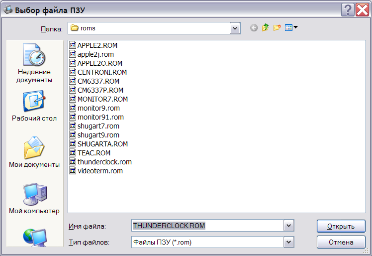

Эмулятор содержит поддержку платы часов Apple ][ Thunderclock Plus. Поддерживаются все основные возможности карты, в том числе, генерация таймерных прерываний.
При изменении текущего времени, запоминается разница между заданным временем и системным, которая может быть сохранена в состоянии системы и впоследствии загружена для продолжения работы.
Модуль эмуляции платы Thunderclock содержит только одну настройку: имя прошивки ПЗУ.

Для проверки работоспособности платы, в состав эмулятора включена конфигурация (3f) Thunderclock.
См. также: Изменение конфигурации, Описание и настройка устройств, Поддерживаемое оборудование, Главное меню